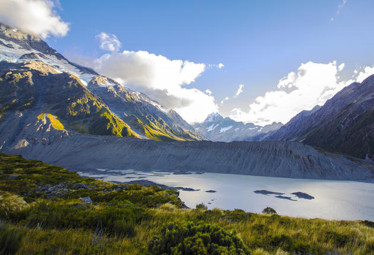

Understanding the Significance of Māori Place Names
Māori place names are not just labels; they hold deep cultural and historical significance.
These names often reflect the geography, history, or stories associated with a location. This section
explores the meanings behind some notable Māori place names in New Zealand.

1. Aotearoa
Meaning:
Aotearoa is the Māori name for New Zealand and is often translated as "The Land of the Long White Cloud."
The name reflects the country's appearance as seen by early Māori explorers approaching from the sea.
Significance:
Aotearoa represents the natural beauty and geographical features of New Zealand. It emphasizes the land's
importance to Māori culture and heritage.
2. Rotorua
Meaning:
Rotorua is derived from the Māori words "rota" (second) and "rua" (lake), meaning "Second Lake." It refers
to the fact that Rotorua is the second lake encountered in the region's lake district.
Significance:
Rotorua is renowned for its geothermal activity and Māori culture. The name reflects its geographical position
and the presence of multiple lakes in the area.v
3. Wellington
Meaning:
Wellington's Māori name is "Te Whanganui-a-Tara," which translates to "The Great Harbour of Tara." This name
commemorates Tara, a legendary Polynesian explorer who is said to have arrived in the area..
Significance:
Te Whanganui-a-Tara highlights the historical and cultural importance of the harbour area, emphasizing its role in
Māori navigation and settlement..
4. Taranaki
Meaning:
Taranaki comes from the Māori words "tara" (peak) and "naki" (abundant or high). It means "The Peak that is Abundant,"
referring to Mount Taranaki, a prominent volcanic peak in the region..
Significance:
Mount Taranaki is a significant cultural and spiritual symbol for the local Māori people. The name reflects the mountain's
imposing presence and its role in the region's natural landscape.
5. Auckland
Meaning:
Auckland’s Māori name is "Tamaki Makaurau," which translates to "Tamaki of a Thousand Lovers" or "Tamaki desired by many."
It references the area's fertility and desirability as a place to live..
Significance:
The name Tamaki Makaurau reflects the area's historical significance and its attractiveness to early Māori settlers.
It emphasizes the region's abundant resources and strategic location.
Explore Further
Understanding Māori place names provides valuable insights into the cultural and historical context of New Zealand. Each name tells a story, reflecting the land’s significance and the Māori perspective on their environment.